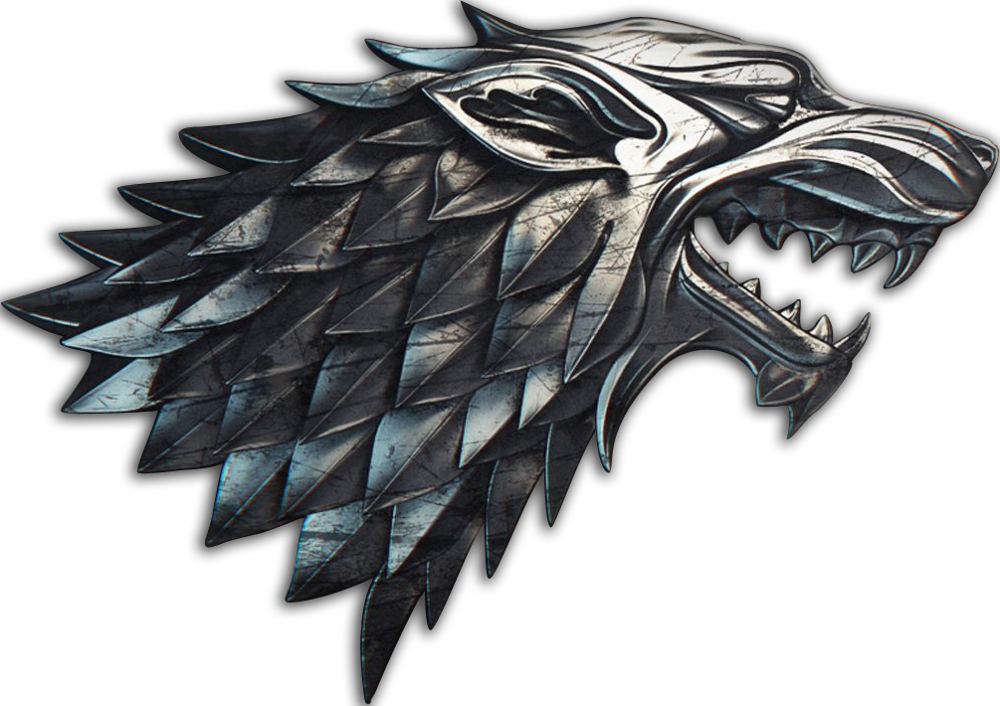

La Casa Stark de Invernalia es una de las casas más antiguas y nobles de Poniente. Su linaje se extiende hasta los Primeros Hombres, gobernando el Norte como reyes por derecho propio. Su emblema es un lobo huargo de cenizo corriendo sobre campo de plata. Están situados en el Norte, donde el invierno es largo y feroz. Los Stark siempre han sido conocidos por su lema: "Se acerca el Invierno". Viven bajo el constante recordatorio de que los peligros de la estación fría siempre acechan. Su mandoble ancestral de acero valyrio se llamaba Hielo.